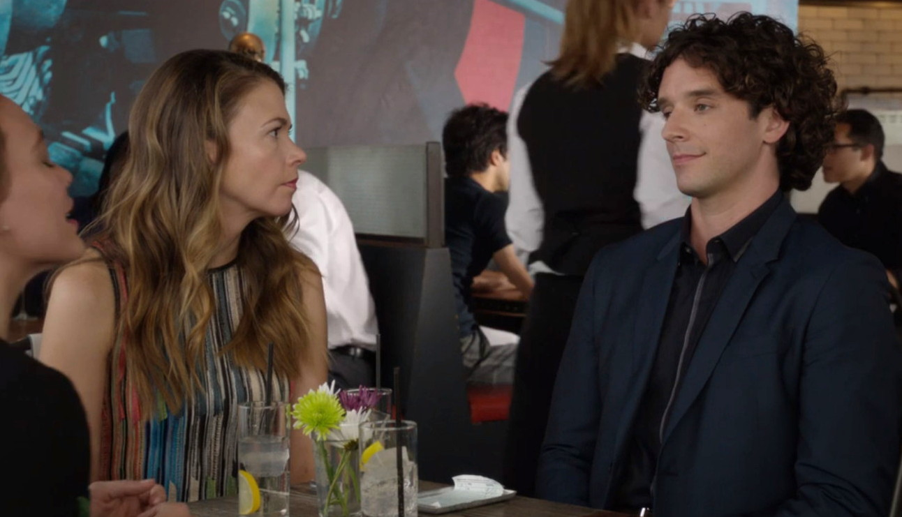
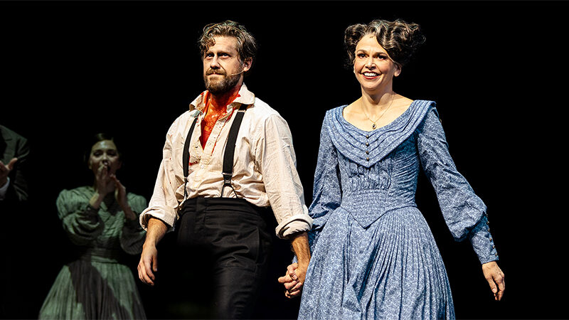

Sutton Foster and Michael Urie's friendship has only deepened in the years since they wrapped the series Younger in 2019. After starring in the TV Land show together over numerous seasons, the two reunited for the current acclaimed revival of Once Upon a Mattress, now playing on Broadway.
“I really feel like I've made friends with you,” Foster, 49, tells Urie, 44, in a joint conversation with PEOPLE, from backstage at the Hudson Theatre. “We confide in each other about life stuff. And being able to be partners on stage is beyond. He's like the ultimate partner, ultimate dance partner.”
Based on Hans Christian Andersen's The Princess and the Pea, Once Upon a Mattress follows Foster's Winnifred the Woebegone as she competes for the hand of Prince Dauntless, played by Urie. Dauntless' mother, Queen Aggravain (Ana Gasteyer), demands he must wed a “true” princess before anyone else in their kingdom can marry.
The revival made its debut on Aug. 12 on Broadway, and will next move to Los Angeles for a four-week engagement at Center Theatre Group's Ahmanson Theatre. Performances will run there from Dec. 10 through Jan. 5, 2025.
Both Foster and Urie were a part of this production of Once Upon a Mattress earlier this year at its sold-out run during the Encores! series at New York City Center.
The dynamics between their onstage characters differ from when they shared the small screen.
“Falling in love is way more fun to play. Flirting is so fun and I love her so much,” Urie tells PEOPLE.
He adds, “She's the most generous person on and off I've ever worked with. She brings bagels every Saturday for everybody. She leads the warm-up before the matinees. She takes her position as the star so seriously and with such grace that everyone is happy here. It's a very happy building. And just like Younger — Younger was a very happy set.”
“On Younger, my character was really mean,” Urie says.
“He was. He was such a little bitch,” Foster says laughing.
As Winnifred, Foster follows in the footsteps of the legendary Carol Burnett, who originated the role in 1959. In preparation, Sutton had the opportunity to meet the star.
”Meeting Carol was... It was a pinch-me moment. I think I was out of body. I was trying very hard to be present,” she says. “I have photo evidence, and it was filmed. So I do know that it happened, but it was pretty wild. And she texts me sometimes."
Other cast members include Brooks Ashmanskas as the Wizard, Daniel Breaker as the Jester and Will Chase as Sir Harry.
Earlier this year, Foster wrapped up her run as Mrs. Lovett in the Tony Award-winning Broadway revival of Sweeney Todd: The Demon Barber of Fleet Street opposite Aaron Tveit. Prior to that, she co-starred in the 2022 revival of The Music Man with Hugh Jackman.
Urie has previous stage credits in Chicken in Biscuits (2021), Torch Song (2018), Buyer & Cellar (2013) and How to Succeed in Business Without Really Trying (2012). His onscreen work includes Ugly Betty, Single All the Way and AppleTV+'s Shrinking.
Included Photo from Yahoo.com, Article published by PEOPLE Magazine
Sutton Foster's Tony Award-winning turn in Anything Goes is sailing into movie theaters!
Before the production — which was filmed live last summer at London's Barbican Theatre — hits U.S. cinemas on March 27 and 30, PEOPLE has an exclusive first look at Foster's performance alongside Ted Lasso actor Samuel Edwards of the Cole Porter classic "You're the Top."
Foster, who headlined Anything Goes when it was revived on Broadway in 2011 and reprised her performance last year in London, stars as Reno Sweeney with Edwards as Billy Crocker.
"I am so proud to have been part of a production which delivers joy and laughter to audiences in the way Anything Goes does," Foster said in a press release announcing the production's upcoming stint in movie theaters.
Directed and choreographed by Tony Award winner Kathleen Marshall, Anything Goes tells a story of romance and hijinks on a transatlantic ocean liner.
Not only can theater fans catch Foster, 46, in cinemas when Anything Goes hits the big screen, the actress is currently starring as Marian the librarian opposite Hugh Jackman in the Broadway revival of The Music Man, which opened at the Winter Garden Theatre last month.
The Music Man follows Harold, a con man, who poses as a boys' band organizer and leader who sells band instruments to naive townspeople, promising to train members of a new band.
Behind the scenes, Harold (who has no music skills) plans to skip town, but is caught up in wooing the prim librarian and piano teacher Marian.
"This was last night," Foster captioned a picture of a packed Broadway house following their opening night performance on Feb. 10. "Loved being in this room with every one of these people (on stage, off stage, in the orchestra, front of house, in the audience, all of 'em.)"
She added, "And I get to do it again… and again. ❤️."
Aaron Tveit and Sutton Foster are teaming up for a Sweeney Todd takeover.
The stars were announced on Tuesday to be the new leads of Broadway's Sweeney Todd: The Demon Barber of Fleet Street, directed by Thomas Kail, starting Friday, Feb. 9, for 12 weeks only. Their final performance will be on Sunday, May 5.
Josh Groban and Annaleigh Ashford began in the roles when the revival of the Stephen Sondheim horror musical kicked off earlier this year in March. Groban, 42, and Ashford, 38, will have their final performance on Sunday, Jan. 14.
"There's a new deadly duo in town — Fleet Street is honored to welcome Aaron Tveit as Sweeney Todd and Sutton Foster as Mrs. Lovett beginning February 9. #AttendTheTale," the show's official account posted on Instagram alongside a photo of the costars in character.
Tveit, 40, most recently starred as Christian in Broadway's Moulin Rouge! The Musical, for which he won a Tony Award.
Foster, 48, starred opposite Hugh Jackman in a recent Music Man revival. The Younger star is the winner of two Tony Awards: best actress in a musical for Anything Goes in 2011 and Thoroughly Modern Millie in 2002.
On his Instagram page, Tveit teased of their casting, "How about a shave?" And Foster wrote simply "Lovett" on her page.
Groban wrote on his Instagram Story that he is "excited to pass the torch on to these beauts as @sweeneytoddbway continues its journey!! Can't wait to see what work... waits...." He added, "Knock 'em dead."
In past interviews, Tveit has expressed interest in playing Sweeney Todd onstage. He told Penta in January, "In terms of musical theater, I've always wanted to play George in Sunday in the Park with George and Sweeney Todd in Sweeney Todd. I was in the Les Mis movie as Enjolras but I'd like to be Jean Valjean when I'm a bit older."
"I haven't played many princes — that's the thing I like to say. I have not really been a love interest," he added. "I've done a little bit more off-center things and I find myself more drawn to conflicted characters and flawed people."
Tickets for Sweeney Todd are available online.
